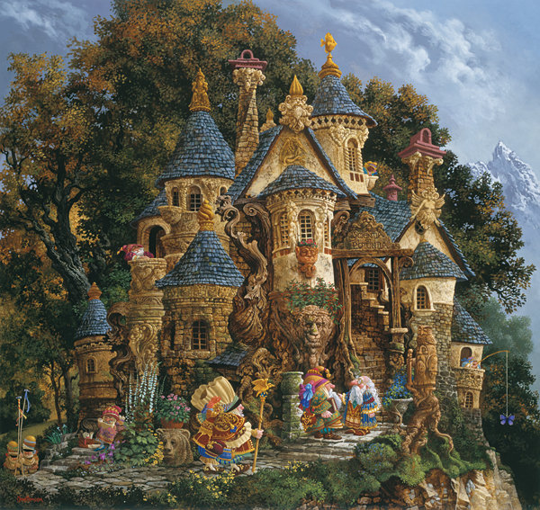

back
College of Magic

The College of Magic is ruled by an Archmage and a Council of Elders. It is the greatest place of magical research on the continent, but only a select few are invited to join it. The college regulate magic on the continent and have inquisitor that will go against any mage that can grow to become dangerous for the safety of all. The people there study magic and guard dangerous books and relic to avoid them falling in the wrong hands. It is a very strict organization made of some of the most powerful wizards on the continent, you can only enter the college if you have been invited, otherwise you will be asked to leave...magically so.